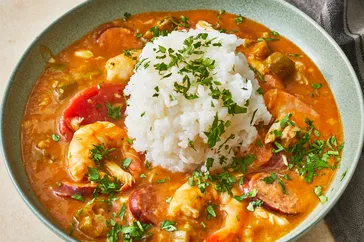

Gumbo Recipes

Description
Gumbo is a traditional Cajun dish that originated in Louisiana. It is a
hearty stew that consists of a dark roux, a mixture of flour and oil that
gives the gumbo its rich flavor and color, and a variety of meats and
vegetables. The most common meats are chicken, andouille sausage, and
shrimp, but some versions also include crab, oysters, or duck. The
vegetables include the holy trinity of onion, celery, and bell pepper, as
well as garlic, parsley, thyme, and bay leaves. Some gumbo recipes also
add okra, tomatoes, or filé powder, a spice made from dried sassafras
leaves.
To make gumbo, you need to cook the roux over medium-low heat, stirring
constantly, until it reaches a deep brown color. This can take up to an
hour, but it is worth the effort. Then, you add the chopped vegetables and
cook until soft. Next, you add the chicken broth, the seasonings, and the
meats, and bring the mixture to a boil. Reduce the heat and simmer the
gumbo until the chicken is cooked through and the flavors are well
blended. Finally, you add the shrimp and cook for a few more minutes until
they turn pink. Serve the gumbo over hot cooked rice, with some crusty
bread and hot sauce on the side. Enjoy!
Ingredients
-
A dark roux, made from flour and oil, that gives the gumbo its thick and
rich texture and flavor.
-
The holy trinity of vegetables, consisting of onion, celery, and bell
pepper, that provide the base for the gumbo.
-
Various meats or seafood, such as chicken, sausage, shrimp, crab, or
oysters, that add protein and flavor to the gumbo.
-
Seasonings and herbs, such as garlic, parsley, thyme, bay leaves,
cayenne pepper, and filé powder, that enhance the taste and aroma of the
gumbo.
-
Okra, tomatoes, or both, that are sometimes added to the gumbo for extra
texture and color.
- Rice, that is cooked separately and served with the gumbo.
Steps
-
Make the roux. In a large pot, combine flour and oil and cook, stirring
constantly on medium low heat, until it reaches a dark brown color. This
can take up to an hour, but it is worth the effort.
-
Chop the veggies. Chop celery, onion, bell pepper, parsley, and garlic.
You can also add okra, if you want.
-
Brown the sausage. In a large skillet, cook the sausage slices over high
heat until browned on both sides. Drain the excess fat.
-
Add to the pot. Add chicken broth, veggies, parsley, and roux to the pot
and stir well. Season with Cajun seasoning, sugar, hot sauce, bay
leaves, and thyme. Bring to a boil, then reduce the heat and simmer for
about an hour, or until the chicken is cooked through and the flavors
are well blended.
-
Add the seafood. Add the shrimp and crab meat and cook for a few more
minutes until the shrimp turn pink. Stir in the Worcestershire sauce and
vinegar. Adjust the seasonings to your taste.
-
Serve over rice. Ladle the gumbo into bowls and serve over hot cooked
rice. Enjoy!